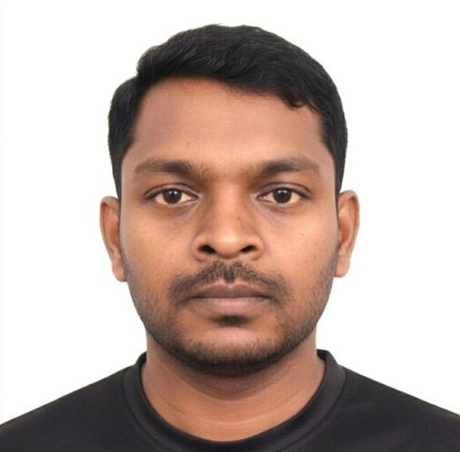

Degradation of bone scaffolds
MPhil thesis: a simulation study of how biodegradable scaffolds degrade in bone tissue engineering, combining hydrolysis, crystallisation and tissue growth in one multiphysics model.
Physicist, researcher & maker
I simulate how biodegradable medical implants break down inside the body, analyse data for development programmes, and teach people to build things with Arduino, MATLAB and Python. I hold an MPhil in Physics from the University of Jaffna, Sri Lanka.

My background is in physics and computer science. My research uses numerical methods (finite difference and finite element) to model how polymer scaffolds degrade while bone tissue grows. Alongside research I have worked as a data analyst and, most recently, as an information management associate with IOM (UN Migration) on the cyclone response in Sri Lanka.
I have tutored IGCSE science and maths since 2013 and run maker workshops for students and educators, including a Makerspace programme at the American Center Colombo. I also spent 18 months on a research exchange at Western Norway University of Applied Sciences in Bergen.
MPhil thesis: a simulation study of how biodegradable scaffolds degrade in bone tissue engineering, combining hydrolysis, crystallisation and tissue growth in one multiphysics model.
Computational analysis of how hydrolysis changes molecular weight in biodegradable polyester implants, published in ACS Omega (2024).
Undergraduate project on identifying lung cancer in CT images using image processing.
Advanced Materials for Clean Energy and Health Applications, Coimbatore Institute of Technology, India
Advanced Materials for Clean Energy and Health Applications, University of Jaffna
Also: Exploring the Effect of Temperature on Poly(Lactic-co-Caprolactone) Degradation (co-author); Portable Solar-Powered Water Purification and Hydrogen Production System (co-author).
ACS Omega 9 (17), 19108–19116. With P. Thirunavukkarasu, T. Rahman, K. Mustafa, D. Velauthapillai.
Also: Mechanical evolution of tissue engineering scaffolds (Vingnanam Research Conference); Smart Tracking of Plastic Containers for an Efficient Waste Management Future; Gamification of Plastic Waste Management for Behavioral Change (both International Conference on Plastics & Environmental Sustainability).
Advanced Materials for Clean Energy and Health Applications, Coimbatore Institute of Technology, India
Technological Advances in Science, Medicine and Engineering Conference
International Organization for Migration (UN Migration)
Institute for Development Research & Training
Managed and analysed project datasets for research and development programmes.
University of Jaffna
Ran numerical and simulation studies for biodegradable medical implants and coordinated academic writing.
University of Jaffna & Open University of Sri Lanka
Led physics lab demonstrations, marked reports and supported course delivery.
Taught Arduino, PCB design, MATLAB/SIMULINK and IoT to undergraduates and educators, and ran a Makerspace programme for school students at American Center Colombo.
Mathematics, Physics, Chemistry and Biology for IGCSE students.
University of Jaffna. Research exchange at Western Norway University of Applied Sciences, Bergen (Feb 2022 – Aug 2023).
University of Jaffna
A compact unit combining a solar still with water electrolysis. Presented at an international conference, 2025.
A tracking system for more efficient waste management. Presented at an international conference, 2024.
1st runner-up, Sampath Green Inventor, 2018.
Youth Forum Member at American Corner Kandy (2021–2022), leading an English-speaking forum. Participant in the National Youth Social Innovation Challenge, 2018.
Open to research, data and education roles, and to collaborations on simulation and maker projects. Based in Sri Lanka.